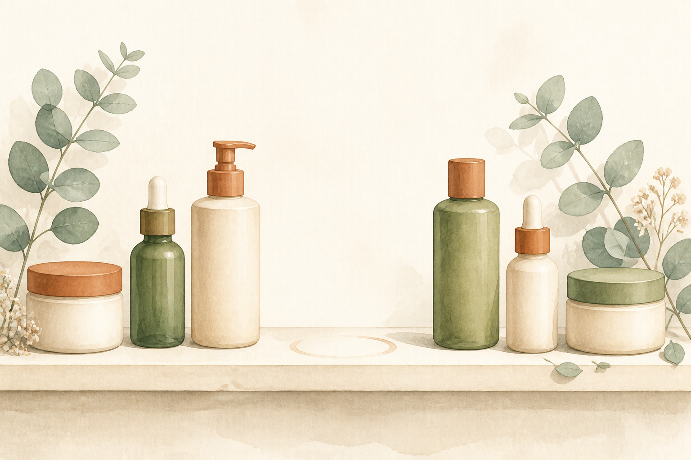
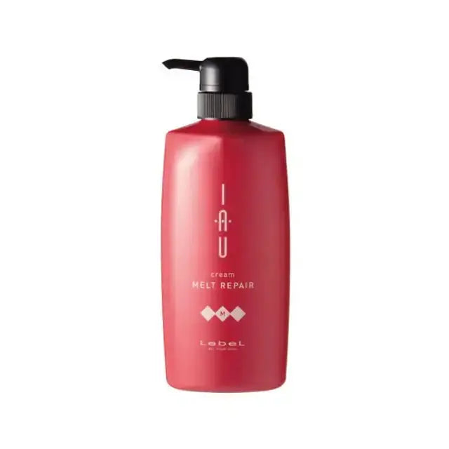

EMPATHY
こんな「トリートメントだけは、選んだ記憶がない」、心当たりありませんか。
- シャンプーは吟味して選んだのに、トリートメントは「ついてきたもの」を何となく使っている
- いま洗面所にあるトリートメントを、いつ・なぜ買ったのか思い出せない
- 詰め替えを買い足しているだけで、中身を見直したことが何年もない
- ヘアマスクは持っているが、それは週に数回のもので、毎日のトリートメントとは別だと気づいていなかった
- 洗い流さないトリートメントには詳しいのに、洗い流すほうは説明できない
- 傷んだ髪は「乾燥している」ものだと思っている
- ケアを足すことばかり考えていて、すでに毎日やっている工程を疑ったことがない
一つでも頷いたなら、あと3分だけ読み進めてほしいんです。
私はこのシリーズで、8回かけてアイテムを揃えてきました。第8弾でついに「洗う前」まで埋めて、工程がぐるっと一周した気になっていました。合計¥39,986。正直、やり切ったと思っていたんです。
念のため、8本を工程順に並べ直してみました。
洗う前が第8弾。洗うが第2弾。そのあと、乾かす前が第1弾で、仕上げが第3弾。週に数回のマスクが第4弾、香りが第5弾、頭皮が第6弾、それを届ける道具が第7弾。──きれいに埋まっているように見えて、ひとつだけ抜けていました。
洗ったあと、流す前に使うほうのトリートメントです。
第4弾のヘアマスクは週2〜3回のスペシャルケアで、毎日のものではありません。第1弾のNo.6は洗い流さないアウトバス。つまり「シャンプーの直後に手に取って、最後に流すやつ」だけが、8回かけて一度も出てきていなかった。
もっと言うと、私はそこで何年も前から洗面所にある市販品を、何も考えずに使い続けていました。第2弾でシャンプーだけ良くして、そのあと毎日それを上書きしていたことになります。

IF NOTHING CHANGES
正直に言うと、いちばん怖いのは「トリートメントが安物であること」じゃありません。
¥39,986ぶんのケアを、毎日その30秒で上書きし続けることです。
考えてみてください。この工程は、飛ばせません。シャンプーをした日は、ほぼ必ず何かを塗ります。つまりシリーズで唯一、「やらない日がない」工程なんです。
第8弾のプレケアは週1〜2回。第4弾のマスクも週2〜3回。第5弾の香りは、つけたい日だけ。どれも「やらない日」が存在します。でもこれだけは、毎日発生する。8本の中でいちばん回数が多い工程を、私はいちばん考えずに通過していました。
しかも、この状態は自覚しにくい。トリートメントは「切らしたら買う」ものになっているので、選び直すタイミングが来ないんです。シャンプーは「変えようかな」と思うのに、トリートメントは詰め替えを足すだけで何年も過ぎる。
そして半年後も、たぶん同じです。洗面台には10本目、11本目の新しいアイテムが増えていて、でも毎日いちばん多く触れているのは、いつ買ったか思い出せないあの1本のまま。
いちばんもったいないのは、ここです。第1〜8弾で、"何を足すか"の答えはもう出そろっているんです。出ていないのは、すでに毎日やっている工程の中身のほうだけ。
しかも皮肉なことに、その入れ替えには手間が1秒も増えません。新しい工程を生活に足す話ではなく、もう手が覚えている30秒の、持つボトルが変わるだけです。8本の平均は¥4,998。今回はその約59%です。
──足りなかったのは、9本目の新しい工程じゃありませんでした。8回ぶん見落としていた、毎日の30秒のほうです。まだ間に合います。変えられるのは、今夜のシャンプーの直後からです。
THE TURN
そこでたどり着いたのが、「イオ クリーム メルトリペア」でした。
ここで一つ、はっきりさせておきたいことがあります。第1〜8弾で紹介してきたものは、どれも「新しく足す」ものでした。洗う前の工程を足す、頭皮のケアを足す、香りを足す、道具を足す。生活に何かを1つ増やす提案だった、ということです。
これは欠点ではありません。ケアを厚くするには、工程を足すしかない場面があります。8本とも、その役割を果たしてくれました。
一方で今回のアイテムは、そもそも立ち位置が違います。足すのではなく、すでに毎日やっている工程の中身を入れ替える。工程は増えません。手順も、かかる時間も、まったく同じです。
言ってしまえば、第1〜8弾が"足す"ケア。そしてこの1本が"入れ替える"ケア。何を足すかは8回で決まりました。9回目は、もう毎日やっていることの中身です。
私がこの1本を選んだ理由は、大きく3つ。
シリーズで唯一、「やらない日がない」工程を担当する
プレケアは週1〜2回、マスクは週2〜3回、香りはつけたい日だけ。でもシャンプー後のトリートメントは、シャンプーをした日は必ず発生します。回数がいちばん多い工程だからこそ、中身を変えたときの積み上がり方も違ってきます。
ダメージの捉え方が、第8弾とまったく別の角度
第8弾のオラプレックスは「切れた結合をつなぎ直す=柱を強くする」話でした。イオは「疎水化コントロール」。ダメージ部分は脂質が流出して水となじみすぎる状態になっていて、そのままではケア成分の油分が定着しづらい、という説明です。同じ"補修"でも、見ている場所が違います。
仕上がりで選べる姉妹品がある
しっとりまとまる「メルトリペア」と、さらさら軽い「シルキーリペア」の2種類が同じ価格で用意されています。毎日使うものなので、「重くなるのが苦手」という理由で続かなくなる道を、最初から避けられます。
「何を足すか」から、「もうやっている工程の中身」へ。8回かけてアイテムを揃えてきたからこそ、いちばん回数の多い30秒に目が向きました。
※本商品は化粧品です。記載の成分・技術に関する内容はメーカーの製品説明に基づくものであり、効果を保証するものではありません。感じ方には個人差があります。
THE PRODUCT
イオ クリーム メルトリペアとは
ルベル(タカラベルモント)は、美容室向けの製品を長く手がけてきたメーカーです。第1〜8弾で登場したオラプレックス、ケラスターゼ、リンク、LOA、資生堂プロフェッショナル、SINN PURETE とは重なりません。シリーズ初登場です。
そして商品の位置づけも、シリーズ初です。第1〜8弾は、洗い流さないトリートメント、シャンプー、バーム、ヘアマスク、香水オイル、スカルプエッセンス、スカルプブラシ、プレトリートメント。役割は違っても、全部「新しく足すもの」でした。今回は「入れ替えるもの」。工程が1つも増えない、シリーズ唯一の回になります。

- タイプ
- インバストリートメント(シャンプー後に使い、洗い流す)
- 価格
- ¥2,950(税込)/ 600ml・1mlあたり約¥4.9 ※メーカー希望小売価格 ¥3,960 からの割引適用中
- 使うタイミング
- シャンプーの直後。髪の水気を軽くきってから
- 頻度
- 毎日(シャンプーをした日は毎回)
- 使い方
- 適量を髪全体、とくに毛先を中心になじませ、よくすすぐ
- 考え方
- 疎水化コントロール。ダメージ部分を疎水化して均質にし、ケア成分を受け入れやすい状態に整える
- 配合
- 保湿力の高いハチミツ、ツヤ密度を高める「CMCカクテル」
- 容器
- ポンプ式のボトル(濡れた手でも片手で出せる)
- 香り
- ローズグリーンの香り
- 姉妹品
- シルキーリペア(さらさら・軽い仕上がり / 同価格)
- ブランド
- ルベル(タカラベルモント)・シリーズ初登場
- 位置づけ
- シリーズ唯一の「入れ替える」回(第1〜8弾はすべて足すもの)
この1本のいちばんの特徴は、生活に何も足さないという点です。シャンプーもアウトバスもバームもエッセンスもブラシも、今のまま。第1〜8弾で作った流れには、工程を1つも加えません。変わるのは、シャンプーを流したあとに手を伸ばすボトルだけです。
そしてもう一つ、公式の説明で個人的にいちばん腑に落ちた話があります。「疎水化」という発想です。
傷んだ髪は乾燥しているもの、と私はずっと思っていました。ところがメーカーの説明では、ダメージ部分は内部の脂質が流出して"親水化"している、とされています。水となじみやすくなっている状態です。そうなると、ケア成分の油分のほうが定着しづらくなる。だから先に疎水化して均質な状態に整えてから、ケア成分を届ける。──「足りないから与える」ではなく、「受け取れる状態にしてから与える」という順番の話でした。
※「疎水化コントロール」「CMCカクテル」はメーカーの表記に基づく記載です。効果を保証するものではありません。
WHY IT WORKS
「で、結局それの何がいいの?」に、飾らず正直に答えます。
8回かけて「何を足すか」を揃えてきたからこそ、9回目でようやく「もう毎日やっていること」に目が向きました。これは、8本ぶん遠回りしたからこそ出てきた、私のいちばん正直な実感です。
※上記は使い方・設計に関する説明です。効果には個人差があり、特定の結果を保証するものではありません。1mlあたりの金額は割引適用時の価格に基づく概算です。
WHY TRUST IT
正直に言うと、私は「定番だから」だけでは商品を信じないタイプです。
それでもこの1本を紹介したいと思えたのは、こんな背景があるからです。
シリーズで唯一、"増やさない"回
これまでの8回は、どれも生活に何かを1つ足す提案でした。今回は足しません。もう毎日やっている工程の中身が変わるだけです。合わなかったとしても、失うのは¥2,950と、洗面所の場所ひとつぶんだけです。
「乾燥している」ではなく「なじみすぎている」という説明
傷んだ髪=乾燥、という単純な図式で終わらせず、脂質が流出して親水化した状態だと説明している点に納得感がありました。だから先に疎水化する、という順番にも理屈が通っています。
「与える」まえに「落とす」という設計思想
トリートメント単体ではなく、シャンプーからの一続きで考えられているブランドです。第2弾で洗う側を変えた私にとっては、次に見る場所として自然でした。
仕上がりで2種類に分けている
1本で全員に合いますとは言っていません。しっとりと、さらさら。毎日使うものを1種類で押し切らないところは、むしろ信頼できると感じました。
¥2,950 / 600ml という、毎日側にふさわしい価格
第1弾¥3,740、第2弾¥4,180、第3弾¥4,290、第4弾¥7,260、第5弾¥8,800、第6弾¥5,776、第7弾¥2,200、第8弾¥3,740。合計¥39,986、平均¥4,998。第9弾は¥2,950。いちばん回数が多い工程が、いちばん安いほうに来たのは、個人的には納得のいく並びでした。
サロン専売品を、公式通販でそのまま買える
ALBUM ONLINE STOREは正規販売店です。サロン専売品は流通経路によって真贋や保管状態が読めないことがあるので、私は毎回ここを確認してから紹介しています。
WHAT PEOPLE NOTICE
こんな使用感(声の傾向)
毎日使うものなので、初日に劇的な変化が起きるタイプではありません。だからこそ、盛らずに、使ってみて分かったことをそのまま整理してみます。
テクスチャーについて
しっかりしたクリーム状で、手に取ったときに垂れません。ポンプ式なので、濡れた手でも片手で出せます。600mlのボトルはそれなりに大きいので、浴室の棚に置けるサイズかどうかだけは、買う前に一度見ておいたほうがいいです。
水気をきることの効果について
これがいちばん実用的な発見でした。公式に「軽く水気をきり」と書かれている通りにしてみたら、同じ量でも明らかに指通りが違いました。びしょびしょのまま塗ると薄まるうえに量も要ります。地味ですが、ここだけは守る価値があります。
すすぎについて
「よくすすぐ」と書かれているのを、私はずっと軽視していました。ぬるっとした感触を残したほうが効いている気がしていたんですが、すすぎ残しのほうが髪にはよくありません。しっかり流したほうが、翌朝のべたつきがない状態に落ち着きました。
香りについて
ローズグリーンと説明されている通り、青みのある落ち着いた香りです。洗い流すものなので香りが強く残るタイプではありません。第5弾の香水オイルのような「まとう」用途とは、まったく別物として考えたほうがいいです。
しっとり/さらさらの選び方について
私はブリーチとカラーでパサつくほうなのでメルトリペア(しっとり)にしました。細い髪やボリュームが気になる人がしっとりを選ぶと重く感じることがあるので、そこはシルキーリペアのほうが向くと思います。毎日使うものなので、ここは無理をしないほうが続きます。
第4弾のヘアマスクとの関係について
念のため書いておくと、マスクが要らなくなるわけではありません。マスクは週2〜3回の集中ケア、こちらは毎日の土台です。私はいま、平日はこれ、週末にマスクという分け方に落ち着いています。増えたものはなく、毎日側の中身が入れ替わっただけです。
もちろん、髪質も施術履歴も人それぞれ。だからこそ、「自分の毎日のどこに置けるか」を一度試してみる価値があるアイテムだと思っています。
※上記は一般的な使用感の傾向および個人の感想であり、効果を保証するものではありません。
FAQ
よくある質問
第4弾のヘアマスクを持っています。買い替えということですか?
第2弾のシャンプー(ケラスターゼ)と、ブランドが違っても大丈夫ですか?
しっとり(メルトリペア)とさらさら(シルキーリペア)、どちらを選べばいいですか?
600mlは多すぎませんか?
洗い流さないトリートメント(第1弾のNo.6)があれば、これは要りませんか?
「疎水化」ってどういうことですか?
使ったら、傷んだ髪が治るということですか?
いまの価格はずっと続きますか?
ABOUT THE PRICE
価格の考え方
イオ クリーム メルトリペアは 600ml で ¥2,950(税込)。メーカー希望小売価格 ¥3,960 からの割引が適用されている状態です。1mlあたりに直すと、約¥4.9になります。
これまでの8本を並べてみます。¥3,740 / ¥4,180 / ¥4,290 / ¥7,260 / ¥8,800 / ¥5,776 / ¥2,200 / ¥3,740。合計¥39,986、1本あたりの平均は¥4,998。今回の¥2,950は、その約59%にあたります。
ただ、ここで「平均より安いですよ」で終わらせたくないんです。今回いちばん見てほしいのは、金額そのものより1回あたりの重みのほうだからです。
前回の第8弾は100mlで¥3,740。1mlあたり約¥37でした。週1〜2回のスペシャルケアなので、私はそれでいいと思っています。特別な工程には、特別な単価があっていい。
今回は1mlあたり約¥4.9。前回のおよそ7分の1です。そしてこちらは、シャンプーをした日は必ず使います。単価がいちばん低い工程が、いちばん回数の多い工程でもある。この並びは、毎日続けるものとしてかなり現実的だと感じました。
逆に言うと、ここが高いと続きません。「良いものだけど、もったいなくて少しずつ使う」は、毎日側のアイテムでは起きてほしくないことです。たっぷり使えて、切らしても抵抗なく買い直せる。毎日の工程に必要なのは、たぶんそういう性質のほうです。
そしてもう一つ。この1本は、何かの代わりに買うものではありますが、何かを新しく増やすものではありません。今使っている8本はそのまま全部残ります。増えるのは、生活の中では何もありません。変わるのは、シャンプーを流したあとに手を伸ばすボトルだけです。
※価格・在庫は変動します。現在の¥2,950はメーカー希望小売価格¥3,960からの割引適用時の価格で、割引が終了する場合があります。最新情報は必ず商品ページでご確認ください。1mlあたりの金額は割引適用時の価格に基づく概算です。
BEFORE YOU GO
安心して試すために
「トリートメントを替えるだけで、そんなに変わるの?」その気持ち、よく分かります。私も8回ぶん、そこを一度も疑いませんでした。トリートメントは"シャンプーについてくるもの"くらいの扱いで、選ぶ対象だと思っていなかった。
だからこそ、この回は「何も増えない」という点を強調しておきたいんです。
これまでの8回は、どれも生活に工程を1つ足す提案でした。夜のケアが1ステップ増える、朝の身支度に1手間加わる。小さくても、続けられるかどうかの判断が必要でした。
今回は、その判断がありません。すでに毎日やっている30秒の、持つボトルが変わるだけです。手順も、かかる時間も、1秒も増えません。仮に「私には合わなかった」となっても、失うのは¥2,950と、浴室の棚のスペースひとつぶんだけです。
そして、いきなり9つすべてを揃える必要もまったくありません。第1〜8弾で紹介したケアを、まず自分のペースで試す。そのうえで「揃えたはずなのに、まだ何か足りない気がする」と感じたタイミングで、いま毎日使っているものを一度見直す。その順番でまったく問題ありません。
というより、この9つの中でいちばん"始めやすい"のが、たぶんこの1本です。新しい習慣を作る必要がないからです。今どんなケアをしていようと、その中の1本が置き換わるだけ。何かをやめる必要も、時間を作る必要もありません。
何を足すかは8回で決まりました。9回目は、もう毎日やっていることの中身です。大きく生活を変える買い物ではなく、「今夜、シャンプーを流したあとに手に取るものを変えてみる」だけの、小さな一歩です。
※頭皮や肌に異常が現れた場合は使用を中止し、必要に応じて医師等にご相談ください。目に入った場合はすぐに洗い流してください。使用前に必ずパッケージの表示と使用上の注意をご確認ください。
LAST WORD
「洗う前」「洗う」「乾かす前」「仕上げ」「週数回」「香り」「頭皮」「道具」。8回かけて、足すものはもう出揃っています。
でも、それはぜんぶ「増やす」話でした。
すでに毎日やっている工程の中身を疑う話は、8回とも一度も出てきていません。
このまま10本目の新しい工程を探し続けて、「まだ何か足りないのかも」と思いながらまた半年過ごすのか。それとも、いちばん回数の多い30秒の中身を一度だけ見直して、そこから積み上げ直すのか。
小さな選択に見えて、洗面台の景色は、案外ここで変わります。そして、変えられるのは、いつだって"今夜のシャンプーの直後"からです。
追伸
正直に言うと、この1本も「魔法の1本」ではありません。これは化粧品であり、傷んだ髪が治る・元に戻るといった効果を持つものではない。使った翌朝に別人の髪になるわけでもありません。感じ方には個人差があります。
それでも私がこれを紹介したいのは、「足す前に、もうやっていることを疑う」を、9回目にしてやっと覚えたからです。第7弾では「実行を疑う」、第8弾では「順番を疑う」と書きました。今回わかったのは、その隣に「もう毎日やっている工程の中身を疑う」があるということでした。
9回に分けて紹介してきましたが、この9つを全部揃える必要はまったくありません。市販品ジプシーだった頃の私は、うまくいかないたびに何かを買い足していました。減らすことも、入れ替えることも、たぶん一度も考えなかった。だから洗面台のボトルだけが増えていったんだと思います。
もし、アイテムはひと通り揃っているのに、「まだ何か足りない気がする」がずっと消えていないなら。足りない最後の1つは、10本目の新しい何かではなく、もう毎日手に取っている、いつ買ったか思い出せないあの1本のほうかもしれません。今夜、シャンプーを流したあとに手を伸ばすものを、一度だけ見てみてください。